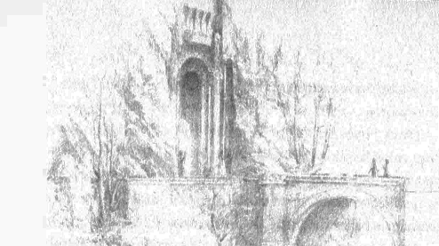
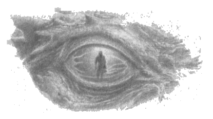

11
Túrin’in Nargothrond’a dönüşünün üzerinden beş sene geçtikten sonra, o senenin bahar mevsiminde iki elf geldi ve isimlerinin Gelmir ile Arminas olduğunu, Finarfin’in halkından olduklarını söylediler; ve Nargothrond Beyi ile bir işleri olduğunu bildirdiler. Aıtık Nargothrond’un tüm güçlerine Túrin komuta ediyordu ve savaşla ilgili bütün konularda o karar veriyordu; gerçekten de sert ve gururlu biri olmuştu, dilediği ya da iyi olduğunu düşündüğü her tür şeyi emredebiliyordu. Elfler Túrin’in huzuruna getirildiler; ama Gelmir şöyle dedi: “Biz, Finarfin’in oğlu Orodreth ile konuşacağız.”
Orodreth geldiği zaman, Gelmir ona şöyle dedi: “Beyim, biz Angrod’un halkındanız ve Nirnaeth’ten bu yana çok yol aldık; lâkin son vakitlerde Sirion Dağlarının yakınlarında, Círdan’ın takipçileriyle yaşamaktayız. Ve bir gün Círdan bizi çağırdı ve size gitmemizi buyurdu; zira Suların Efendisi Ulmo bizzat ona görünmüş ve Nargothrond’a yaklaşan büyük tehlikeye dair kendisini uyarmış.”
Ama Orodreth ihtiyatlı davrandı ve şöyle yanıt verdi: “O zaman neden buraya kuzeyden geldiniz? Yoksa başka işleriniz de mi vardı?”
Bunun üzerine Arminas şöyle konuştu: “Evet, beyim. Nirnaeth’ten bu yana Turgon’un saklı krallığını arıyorum, lâkin onu bulamadım; ve korkarım ki, bu arayışta buradaki görevimizi ziyadesiyle uzattık. Zira Círdan, gizlilik ve hız için gemiyle kıyıdan yolladı bizi ve Drengist’te karaya çıktık. Ancak deniz halkı arasında, geçmiş senelerde Turgon’un habercisi olarak güneye gelmiş olanlar vardı ve ihtiyatlı konuşmalarına bakarak, Turgon, çoğularının inandığı üzere güneyde değil, hâlâ kuzeyde yaşıyormuş gibi göründü bana. Lâkin aradığımız şeye dair ne bir işaret ne de bir söylenti bulduk.”
“Turgon’u neden arıyorsunuz?” dedi Orodreth.
“Morgoth’a karşı en uzun süre onun krallığının dayanacağı söyleniyor,” diye yanıt verdi Arminas. Ve bu sözler Orodreth’e kötü alamet gibi geldi ve hiç memnun olmadı.
“O zaman sizi Nargothrond’da oyalamayayım,” dedi; “çünkü burada Turgon’dan haber alamazsınız. Ve kimsenin bana Nargothrond’un tehlikede olduğunu öğretmesine ihtiyacım yok.”
“Sorularınıza açık sözlülükle yanıt verdiğimiz için hiddetlenmeyin beyim,” dedi Gelmir. “Hem, buraya gelene kadarki düz yolda geçen yolculuğumuz verimsiz olmadı, zira sizin en uzağa giden izcilerinizin bile görmediği yerlerden geçtik; Dor-lómin’den ve Ered Wethrin’in saçaklarındaki diyarları aştık ve Sirion Geçidi’ni keşfederek, düşmanın yollarını gözetledik. O bölgelerde kalabalık ork ve habis yaratık grupları birikiyor ve Sauron’un Adası’nda bir ordu toplanıyor.”
“Biliyorum,” dedi Túrin. “Getirdiğiniz haber bayat. Círdan’ın mesajının bir amacı vardıysa bile, daha erken gelmeliydi.”
“En azından, beyim, mesajı şimdi duyacaksınız,” dedi Gelmir, Orodreth’e hitaben. “O halde Suların Efendisi’nin sözlerini dinle! O, Círdan’a şöyle dedi: ‘Kuzey’in Şerri Sirion’un pınarlarını kirletti ve akarsu parmaklarındaki gücüm çekiliyor. Lâkin daha beteri gelecek. Nargothrond Beyi’ne şöyle söyle: Kalenin kapılarını kapatsın ve dışarı çıkmasın. Gururunun taşlarını gürültülü ırmağa atsın ki, sürüngen şer kapıyı bulamasın.’”
Orodreth’e bu sözler karanlık geldi ve her zamanki gibi, öğüt için Túrin’e döndü. Ama Túrin habercilere güvenmemişti ve horgörüyle şöyle dedi: “Düşmanın yakınında oturan Círdan bizim savaşlarımızı nereden bilir? Denizci kendi gemilerine baksın! Ama Suların Efendisi gerçekten de bize öğüt göndermişse, daha açık konuşsun. Aksi halde, savaşta eğitim görmüş biri için, bizim durumumuzda gücümüzü toplamak ve cesaretle gidip, onlar fazla yakına gelmeden düşmanla karşılaşmak daha iyiymiş gibi görünüyor.”
Bunun üzerine Gelinir Orodreth’e eğildi ve şöyle dedi: “Bana buyrulduğu haliyle konuştum, beyim,” ve sırtını döndü. Ama Arminas Túrin’e şöyle dedi: “İşittiğim gibi, Hador Evi’nden misin gerçekten?”
“Burada adım Agarwaen, Nargothrond’un Kara Kılıcı,” diye yanıt verdi Túrin. “İhtiyatlı konuşmakta çok ustasın, anlaşılan, dostum Arminas. Turgon’un sırrının senden saklanması iyi olmuş, yoksa kısa zamanda Angband’da duyulurdu. Bir insanın ismi kendisine aittir ve Húrin’in oğlu, o saklanmayı tercih ederken senin onu ele verdiğini duyarsa, o zaman Morgoth seni alsın ve dilini kavursun!”
Arminas, Túrin’in kara gazabı karşısında dehşete düşmüştü; ama Gelmir şöyle dedi: “Bizim tarafımızdan ihanete uğramayacak o, Agarwaen. Daha açık konuşulabilen kapalı kapılar ardında görüşmüyor muyuz? Hem, sanırım Arminas seni, Deniz kıyısında yaşayan herkes Ulmo’nun Hador Evi’ni çok sevdiğini bildiğinden ve Húrin ile kardeşi Huor’un bir zamanlar Saklı Diyar’a geldiği söylendiğinden sorguladı.”
“Eğer öyle olsaydı, bundan, ne büyük ne de küçük, kimseye bahsetmezdi, özellikle de çocukluk çağındaki oğluna,” diye yanıt verdi Túrin. “Bu yüzden, ben Armnas’ın bunu bana Turgon hakkında bir şey öğrenmek için sorduğuna inanmıyorum. Ben bu tür zararlı habercilere güvenmem.”
“Şüpheni kendine sakla!” dedi Arminas öfkeyle. “Yanlış anladı Gelmir beni. Sordum, zira burada inanılıyor gibi görünen şeyden kuşku duydum; zira, adın ne olursa olsun, Hador’un kanından gelenlere pek az benziyorsun.”
“Peki, sen onlar hakkında ne biliyorsun?” dedi Túrin.
“Húrin’i gördüm,” diye yanıt verdi Arminas, “ondan evvel de atalarını. Ve Dor-lómin kıraçlarında, Húrin’in kardeşi Huor’un oğlu Tuor’la karşılaştım; ve sen benzemezken o benziyor atalarına.”
“Olabilir,” dedi Túrin, “gerçi, şimdiye dek Tuor’dan hiç haber alamadım. Ama benim kafam altın rengi değil karaysa da, bundan utanmıyorum. Çünkü annesine çeken ilk oğul ben değilim; ve ben Bëor Evi’nden Morwen Eledhwen’den geliyorum ve Beren Camlost’un akrabasıyım.”
“Benim sözünü ettiğim altın ile kara arasındaki fark değildi,” dedi Arminas. “Hador Evi’nden diğerlerinin tavrı da farklı Tuor da öyle. Zira onlar nazik davranıyor, iyi öğüdü dinliyorlar, Batı’nın Efendilerine saygı duyuyorlar. Lâkin anlaşılan sen yalnızca kendi bilgeliğini ve kendi kılıcını dinliyorsun; ve kibir dolu laflar dökülüyor ağzından. Sana diyorum ki, Agarwaen Mormegil, böyle devam edersen sonun Hador ve Bëor Evlerinden herhangi birinin ummayacağı şekilde olacak.”
“Öteden beri öyle oldu,” diye yanıt verdi Túrin. “Ve eğer, göründüğü gibi, babamın yiğitliği yüzünden Morgoth’un nefretini taşımak zorundaysam, krallarla akraba olduğunu iddia etmesine rağmen, bir asker kaçağının sataşmalarına ve uğursuzluğuna da mı tahammül etmeliyim? Sen Deniz’in ihtiyatlı kıyılarına dön!”
Bunun üzerine Gelmir ile Arminas ayrıldılar ve güneye döndüler; ama Túrin’in sataşmalarına rağmen, memnunlukla soydaşlarının yanında kalıp savaşı beklerlerdi; ve sırf Círdan, Ulmo’nun emirleri uyarınca, ona Nargothrond’dan haber getirmelerini ve oradaki işlerini çabuk bitirmelerini söylediği için geri dönmüşlerdi. Ve habercilerin sözleri Orodreth’i çok rahatsız etmişti; ama Túrin’in ruh hali daha da beter oldu ve onların öğütlerini dinlemeyi kesinlikle reddediyordu, büyük köprünün yıkılmasına asla izin vermezdi. Çünkü, Ulmo’nun sözlerinin en azından bu kısmı doğru anlaşılmıştı.
Habercilerin gidişinden kısa şüre sonra, Brethil Beyi Handir öldürüldü; çünkü orklar daha da ilerleyebilmek için Teiglin Geçitlerini güvenceye almaya çalışırken onun topraklarını istila etmişti. Handir onlarla savaştı, ama Brethil’in insanları alt edildi ve koruluklarına sürüldü. Orklar onları izlemedi, çünkü şimdilik amaçlarına ulaşmışlardı; ve Sirion Geçidi’nde güçlerini toplamaya devam ettiler.
O senenin güz mevsiminde, uygun zamanı bekleyen Morgoth uzun zamandır hazırlamakta olduğu büyük orduyu Narog’un halkının üzerine salıverdi; ve ejderhaların babası Glaurung Anfauglith’in üzerinden geçti ve oradan Sirion’un kuzey vadilerine geldi ve büyük kötülük yaptı. Peşinden büyük bir ork ordusu getirerek, Ered Wethrin’in gölgelerinde Eithel Ivrin’i kirletti ve oradan Nargothrond diyarına geçti, Talath Dirnen’i, Narog ile Teiglin arasındaki Saklı Ova’yı yaktı.
Sonra Nargothrond savaşçıları öne çıktı ve Túrin o gün çok uzun boylu ve korkunç görünüyordu ve o Orodreth’in sağında at sürerken ordu yüreklendi. Ama Morgoth’un ordusu, izcilerin bildirdiklerinden çok daha büyüktü ve Glaurung’un yaklaşmasına, cüce maskesinin koruması altındaki Túrin dışında kimse direnemedi.
Elfler püskürtüldü ve Tumhalad meydanında alt edildi; ve Nargothrond’un tüm gururu ve ordusu kuruyup gitti. Kral Orodreth cephede öldürüldü ve Guilin oğlu Gwindor ölümcül bir biçimde yaralandı. Ama Túrin onun imdadına koştu ve onun önünde herkes kaçıştı; ve Túrin Gwindor’u bozgundan uzağa taşıdı ve bir koruluğa kaçarak onu çimenlerin üzerine yatırdı.
Sonra Gwindor Túrin’e şöyle dedi: “Taşıman taşımamın karşılığı olsun! Lâkin benimkinin sonu kötü oldu, seninki ise kibirli; zira bedenim iyileşmemecesine yaralandı ve Orta Dünya’dan ayrılmak zorundayım. Ve seni sevsem de, Húrin’in oğlu, seni orklardan kurtardığım güne esef ediyorum. Yürekliliğin ve gururun olmasa hâlâ sevgi ve yaşam sahibi olurdum ve Nargothrond bir süre daha direnebilirdi. Şimdi, beni seviyorsan, beni bırak! Hızla Nargothrond’a git ve Finduilas’ı kurtar. Ve sana son lafım şudur: Kaderinle aranda duran tek şey odur. Eğer ki onu kurtarmayı başaramazsan, sonun seni bulmayı başarır. Elveda!”
Bunun üzerine Túrin hemen Nargothrond’a döndü ve yolda bulduğu, bozgundan kaçanları topladı; ve onlar giderken esen sert bir rüzgarla ağaçlardaki yapraklar yere yağdı, çünkü güz kara kışa dönüyordu. Ama Túrin’in Gwindor’u kurtarması yüzünden Glaurung ve ork ordusu öne geçmişti, nöbete bırakılanlar Tumhalad meydanında olanları öğrenemeden, aniden bastırdılar. O gün, Túrin’in Narog üzerine yapılmasına sebep olduğu köprünün kötülüğü ortaya çıktı; çünkü büyük bir köprüydü ve sağlam inşa edilmişti ve çabucak yok edilememişti, böylece düşman kolaylıkla derin ırmağı aştı, Glaurung tüm ateşiyle Felagund Kapılarına dayandı ve onları yıkıp içeri girdi.
Túrin yaklaşırken, korkunç Nargothrond yağması tamamlanmak üzereydi. Orklar, silahlı adamlardan kalanları öldürdü ya da sürdü ve bir yandan da büyük evlerin ve odaların altını üstüne getirdiler, yağmalayıp yıktılar; ama yakıp öldürmedikleri kadınları ve kızları, Angband’a götürülecek köleler olarak, kapıların önündeki taraçaya güttüler. Túrin bu yıkım ve ıstırap manzarasına geldi ve kimse ona direnemedi; direnmezdi de, ama yine de Túrin önüne çıkan herkesi vurarak köprüyü geçti ve yoluna çıkanları biçerek tutsaklara doğru ilerledi.
Artık yalnızdı, çünkü onu takip eden bir avuç kişi de kaçıp saklanmıştı. Ama o anda aşağılık Glaurung açık Felagund Kapılarından çıktı ve arkaya, köprüyle Túrin’in arasına uzandı. Sonra, aniden, içindeki habis ruhla konuştu ve şöyle dedi: “Selam, Húrin’in oğlu. Karşılaştığımız iyi oldu!”
Bunun üzerine Túrin hızla arkasına döndü ve ona doğru yürüdü; gözlerinde ateş vardı ve Gurthang’ın kenarları alev almış gibi parlıyordu. Ama Glaurung kendi ateşini alıkoydu ve yılan gözlerini iri iri açarak Túrin’e baktı. Túrin korkusuzca o gözlerin içine bakarak kılıcını kaldırdı; ve hemen ejderhanın korkunç büyüsüne kapıldı ve adeta taşa döndü. Uzun süre bu şekilde, kıpırtısızca ve sessizce, Felagund Kapılarında durdular. Sonra Glaurung yine konuştu ve Túrin’e sataştı. “Tüm yaptıkların şerre döndü, Húrin’in oğlu,” dedi. “Nankör üvey evlat, kanun kaçağı, arkadaş katili, sevgi hırsızı, Nargothrond’u gasp eden, pervasızların kumandanı, soydaşlarını terk eden. Annen ve kız kardeşin Dor-lómin’de köle olarak, yokluk ve sefalet içinde yaşıyor. Sen prensler gibi giyinmişsin, ama onlar paçavralar içinde. Seni özlüyorlar, ama senin umurunda bile değil. Böyle bir oğlu olduğunu öğrenince baban pek memnun olacaktır; ki öğrenecek de.” Ve Glaurung’un büyüsünün etkisinde olan Túrin bu sözleri dinledi ve kendini, kötü niyetle çarpılmış bir aynaya bakıyormuş gibi gördü ve gördüklerinden tiksindi.
Ve henüz o Glaurung’un gözlerinin hapsinde zihnen işkence çekerken ve kıpırdayamazken, ejderhanın işareti üzerine orklar topladıkları tutsakları götürdüler ve Túrin’in yakınından geçip köprüyü aştılar. Finduilas da aralarındaydı, kollarını Túrin’e uzatarak ismini seslendi. Ama onun haykırışları ve tutsakların feryatları kuzey yolunda işitilmez olana dek bırakmadı Glaurung Túrin’i ve Túrin, peşini bırakmayan o seslere kulaklarını bir daha tıkayamayacaktı.
Sonra, Glaurung aniden bakışlarını çevirdi ve bekledi; ve Túrin, iğrenç bir düşten uyanan biri gibi ağır ağır kıpırdandı. Sonra kendine geldi ve yüksek sesle bağırarak ejderhanın üzerine atıldı. Ama Glaurung gülerek konuştu: “Öldürülmek istiyorsan, seni memnunlukla öldürürüm. Ama bunun Morwen ile Niënor’a pek faydası olmaz. Elf kadının bağırmalarına aldırmadın. Kan bağını da mı inkar edeceksin?”
Ama Túrin kılıcını kaldırdı ve ejderhanın gözlerine saplamaya çalıştı; ve Glaurung hızla gerileyip Túrin’in tepesine dikildi ve şöyle dedi: “Hayır! En azından yiğitsin. Karşıma çıkan herkesten daha fazla. Ve bizim düşmanlarımızın yiğitliğine saygı duymadığımızı söyleyenler yalan söylüyor. Bak şimdi! Sana özgürlüğünü sunuyorum. Soydaşlarının yanına git, gidebiliyorsan. Haydi, git! Ve bu günlerin hikayesini anlatan elf ya da insan çıkarsa, bu armağanı reddedersen adını horgörerek anacaklar.”
Bunun üzerine, hâlâ ejderhanın bakışları yüzünden şaşkın olan Túrin, merhamet bilen bir düşmanın karşısındaymış gibi, Glaurung’un sözlerine inandı ve dönüp hızla köprüyü geçti. Ama o giderken Glaurung arkasından konuştu ve iğrenç bir sesle şunları söyledi: “Acele et, Húrin’in oğlu, Dor-lómin’e git! Ya da belki orklar bir kez daha senden önce giderler. Ve Finduilas için oyalanırsan, Morwen ile Niënor’u bir daha hiç göremezsin; ve onlar sana lanet eder.”
Ama Túrin kuzey yoluna çıktı ve Glaurung oir kez daha kahkaha attı, çünkü efendisinin ona verdiği görevi başarmıştı. Sonra kendi keyfine döndü ve ateş püskürttü ve çevresindeki her şeyi yaktı. Yağmayla meşgul olan bütün orkları oradan çıkarttı ve sürdü, en ufak ganimeti bile reddetti onlara. Sonra köprüyü yıktı ve Narog’un köpüklerine attı; ve böylece kendi güvenliğini sağlayarak, Felagund’un tüm ganimetlerini ve zenginliklerini toplayıp yığdı ve en içerideki salonda onların üzerine uzanıp, bir süre dinlendi.
Ve Túrin kuzey yollarında seğirtti, ama artık Narog ile Teiglin arasındaki topraklar ıssızdı ve uğursuz kış çöküp onu karşıladı; o sene, daha güz geçmeden kar yağmaya başladı ve geç gelen bahar soğuktu. Yol alırken Túrin’e Finduilas’ın feryatlarını duyabiliyormuş gibi geliyordu, sanki ormanlar ve tepeler aracılığıyla onun ismini sesleniyordu ve Túrin’in ızdırabı büyüktü; ama yüreği Glaurung’un yalanlarıyla yandığından ve orkların Húrin’in evini yakması ve Morwen ile Niënor’a işkence etmesi gözlerinin önünden gitmediğinden yoluna devam elti ve asla yolundan sapmadı.
